Piano Playing
Coordinated finger motions on piano keys
Conventional rolling-contact joints rely on surface-aligned ligaments to constrain relative rolling motion, introducing fabrication and assembly sensitivity.
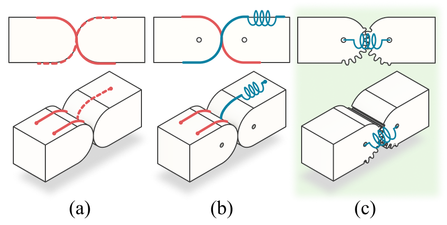
Gear Engagement
The gear-profiled interface constrains relative rolling motion.
Central Elastomer
The central elastomer retains the joint while accommodating limited separation.
This separation of functions forms the basis of the proposed GRC joint architecture.
The GRC joint consists of two gear-profiled rolling surfaces coupled by a central elastomeric element. The geared interface constrains relative rolling motion, while the elastomer maintains joint retention and accommodates limited separation under external loading.
Rolling constraint
Retention & passive compliance
The same joint architecture can be serialized and combined to construct anthropomorphic robotic fingers with different degrees of freedom.
The GRC architecture scales from a single rolling-contact joint to 1-DoF and 3-DoF finger modules, which are integrated into a compact 9-DoF anthropomorphic robotic hand.
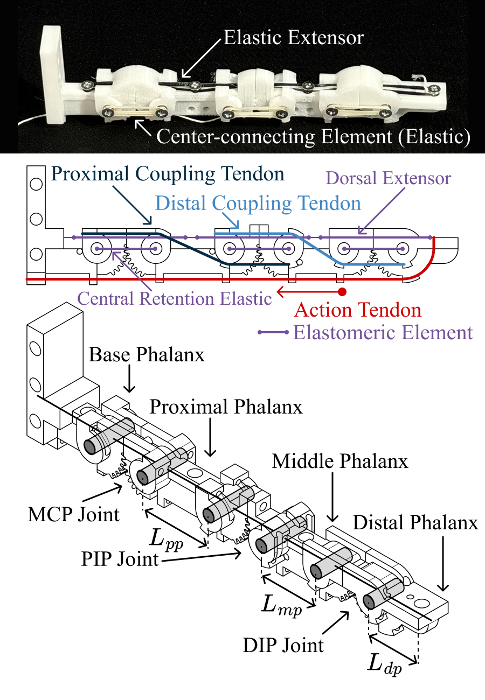
Coupled MCP · PIP · DIP flexion
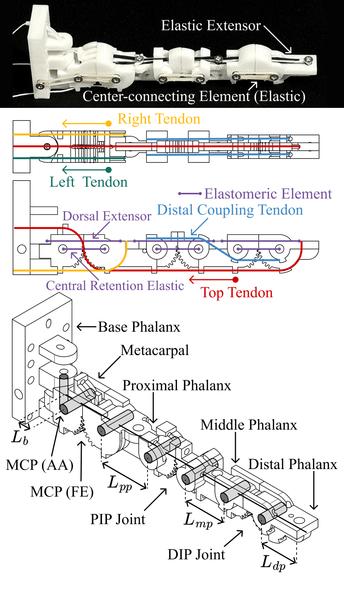
MCP FE · MCP AA · coupled PIP–DIP FE
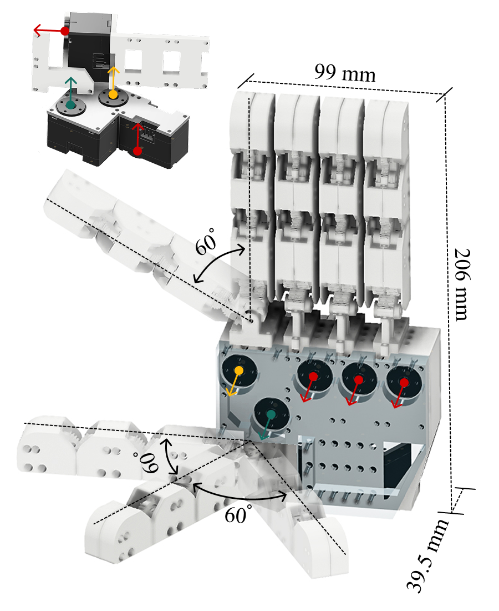
2 × 3-DoF + 3 × 1-DoF fingers
Five representative motions demonstrate the actuation capabilities of the 3-DoF GRC finger.
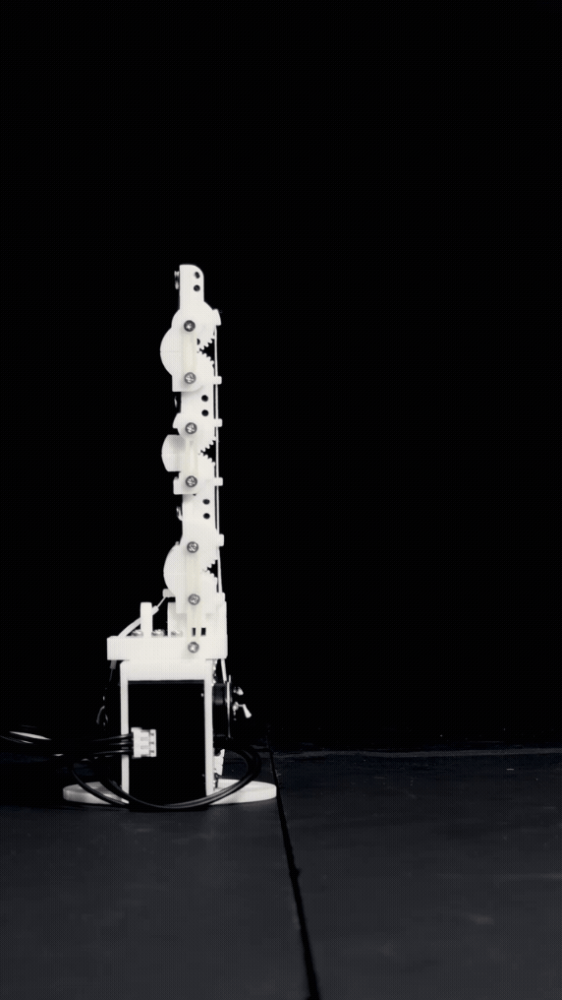
01
MCP Flexion–Extension
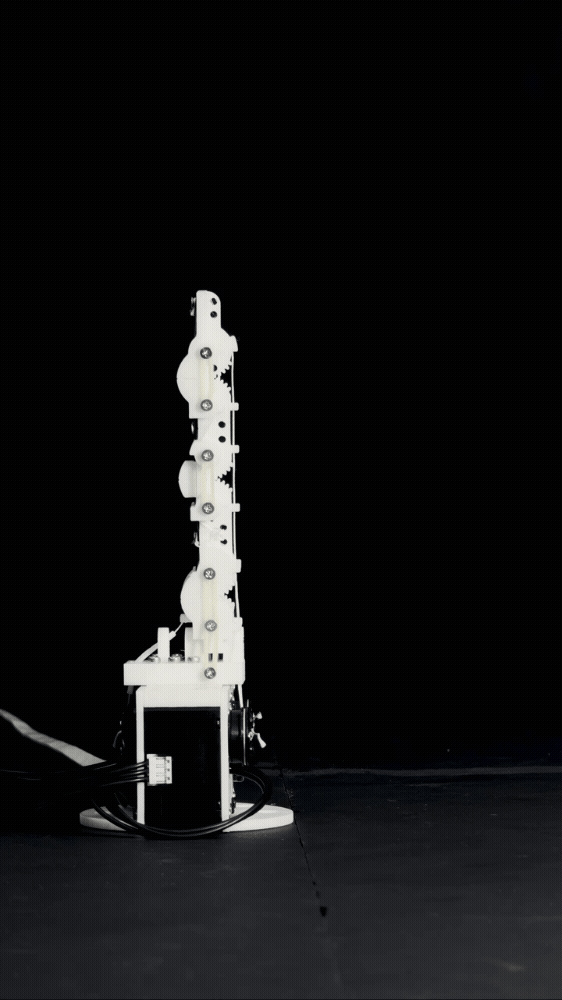
02
Coupled PIP–DIP Flexion–Extension
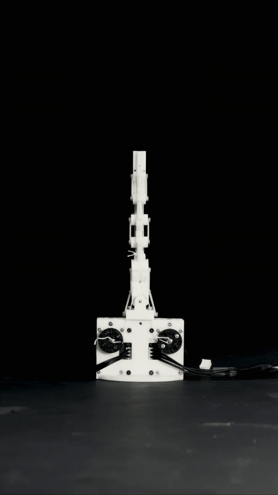
03
MCP Abduction–Adduction
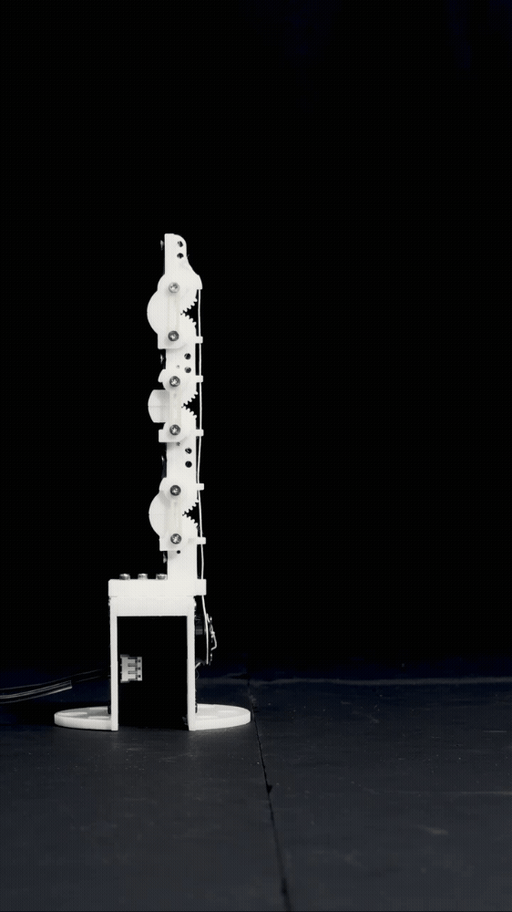
04
MCP and Coupled PIP–DIP Flexion–Extension
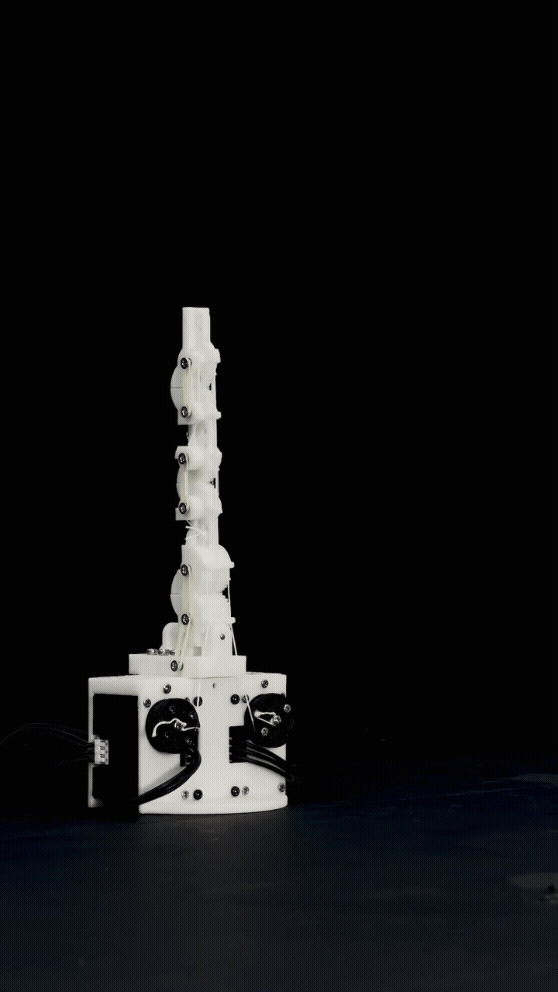
05
Full 3-DoF Flexion–Extension and Abduction–Adduction
The 3-DoF GRC finger combines MCP flexion–extension, MCP abduction–adduction, and coupled PIP–DIP flexion to generate a range of finger configurations through three-tendon actuation.
Full-Hand Impact and Recovery
Under excessive loading, the geared rolling-contact interface may temporarily disengage. Elastomeric retention can guide re-engagement after the external load is removed, provided that the relative displacement remains within a recoverable engagement condition.
Individual-finger disturbance cases
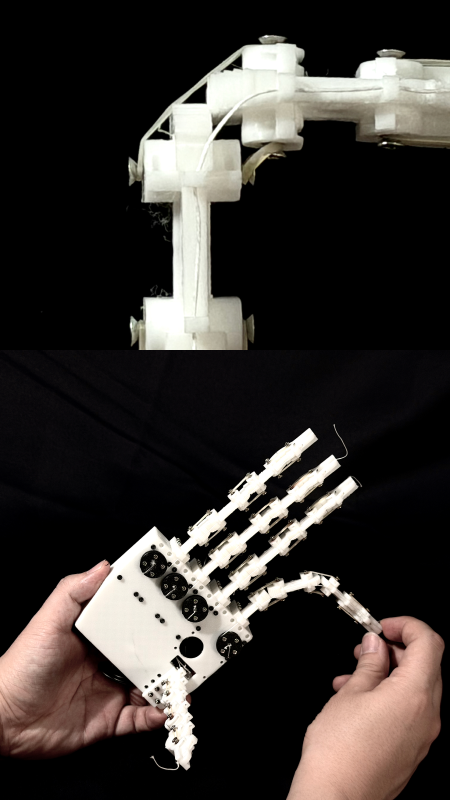
Lateral disturbance beyond the nominal range of motion.
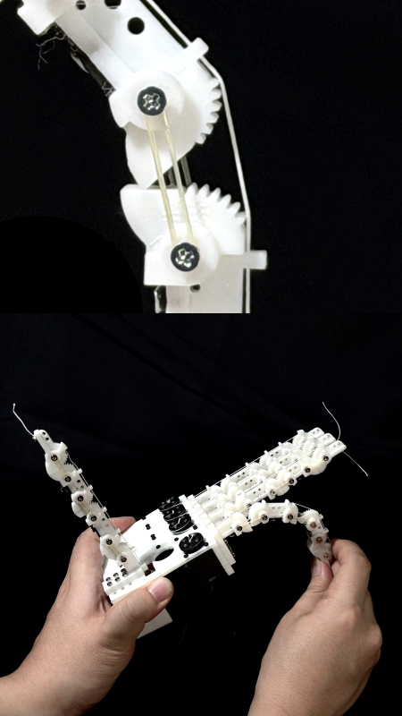
Hyperextension beyond the normal operating range.
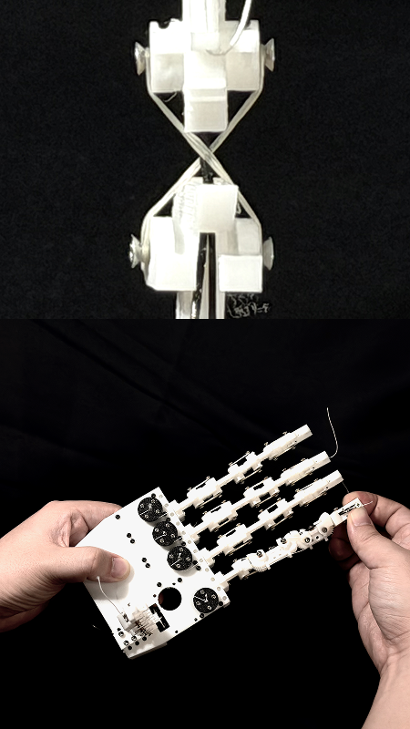
Torsional disturbance applied to the finger structure.
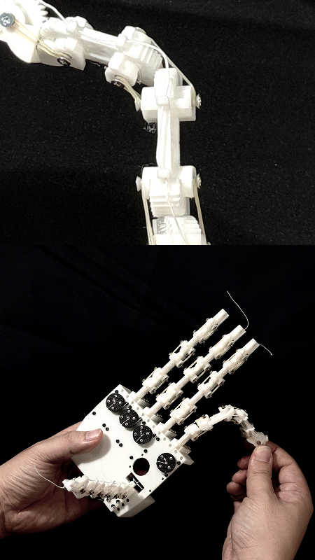
Combined off-axis disturbance involving bending and twisting.
In these representative disturbance cases, the joint temporarily disarticulated under excessive loading and re-engaged after the external load was removed, provided that the relative displacement remained within a recoverable engagement condition.
Pendulum impact experiments
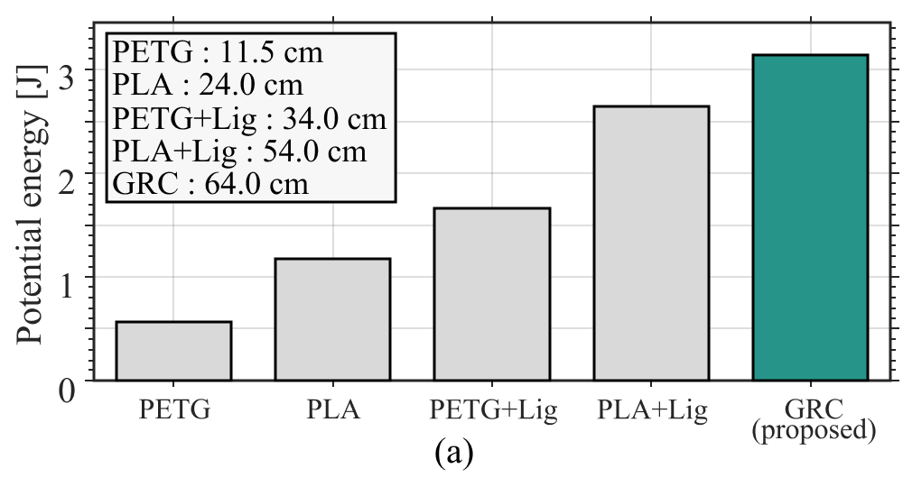
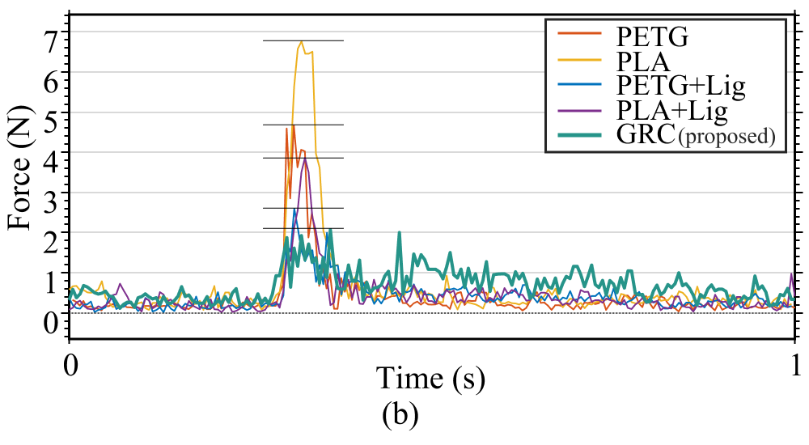
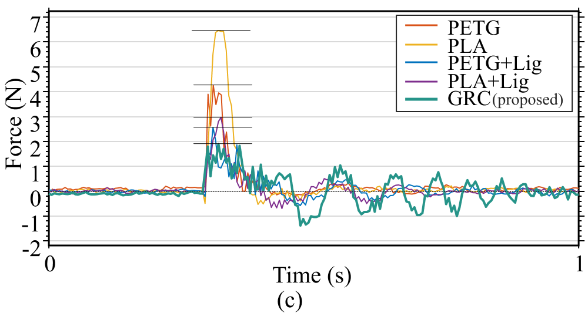
Highest sustained impact energy among the tested RCJ specimens.
Impact-test results. (a) The maximum sustained energy before failure, (b) the resultant force profiles, and (c) the force components along the impact direction. Among the tested specimens, the GRC joint sustained the highest impact energy in this short-term test and exhibited lower peak forces, while showing large-amplitude oscillations after impact.
30 / 33
31 / 33 achieved at least partially
We evaluated the GRC hand across 33 representative static grasp postures, covering power, intermediate, and precision grasp categories.
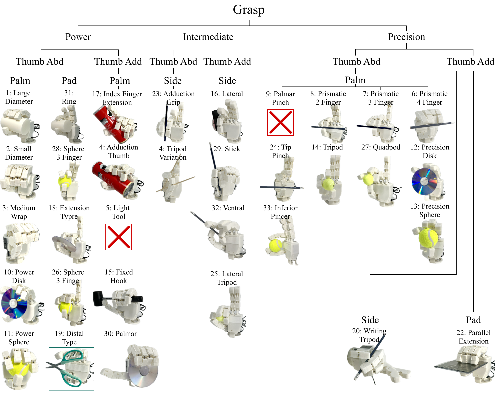
The GRC hand successfully reproduced 30 of the 33 grasp postures in the adopted taxonomy. One additional posture was achieved partially, resulting in 31 of 33 postures being realized at least partially.
30 Complete · 1 Partial · 2 Failed
Failed
Limited by the coupled 1-DoF actuation of the middle, ring, and little fingers, which prevents the independent MCP and PIP/DIP motions required for this grasp.
Failed
Requires additional thumb mobility or compliant fingertip motion beyond the capabilities of the current hand design.
Partial
The posture became achievable only after removing the protective outer shell because of geometric interference.
Overall, the results demonstrate broad static grasp-posture coverage at the hand level, while highlighting clear directions for improving finger independence, thumb mobility, and hand geometry.
From a single rolling-contact joint to a complete anthropomorphic robotic hand.
Gear engagement constrains rolling motion, while a central elastomer provides joint retention and passive compliance.
The GRC architecture was implemented from a single joint to 1-DoF and 3-DoF fingers, and ultimately integrated into a compact 9-DoF robotic hand.
The hand demonstrated repeatable motion, short-term impact tolerance, and broad static grasp-posture coverage.
Variations in the effective center distance can affect gear meshing and introduce positioning errors.
Gear wear, elastomer fatigue and creep, repeated-impact aging, and long-term backlash growth remain to be evaluated.
Matched comparisons with conventional ligament-based RCJs are still required for positioning, hysteresis, friction, and tendon-force transmission.
Future work will focus on increasing independent actuation of the middle, ring, and little fingers, improving thumb mobility and compliance, and refining the joint and protective-shell geometry. We also plan to investigate long-term durability and conduct matched comparisons with ligament-based rolling-contact joints, followed by dynamic manipulation tasks such as in-hand object reorientation and regrasping.
The GRC architecture demonstrates how rolling constraint and joint retention can be separated to build compact anthropomorphic robotic fingers and hands without conventional surface-aligned ligaments.